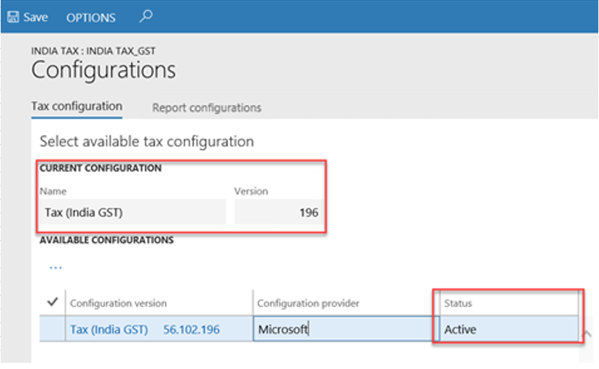
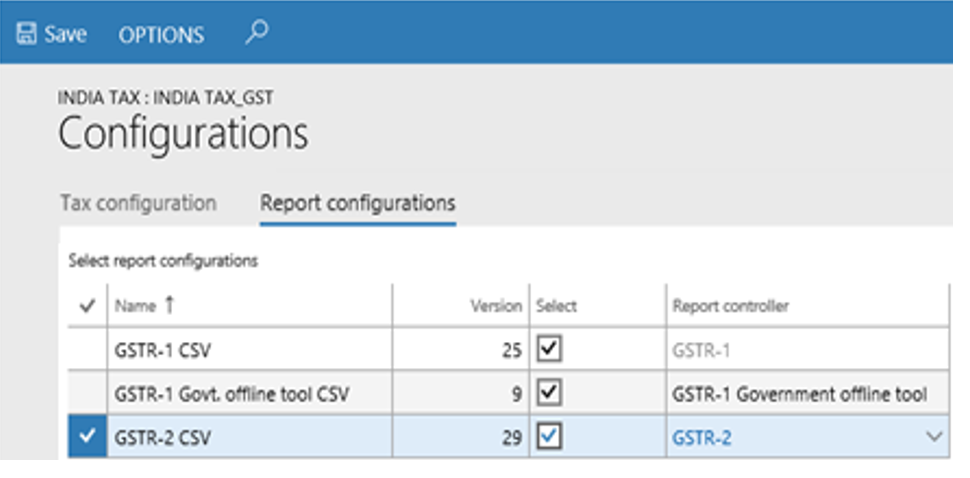
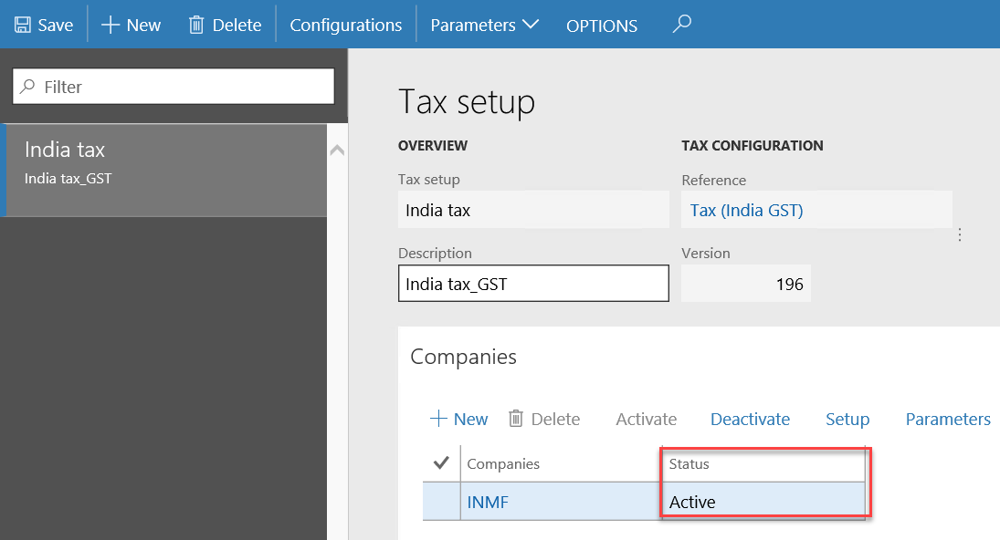
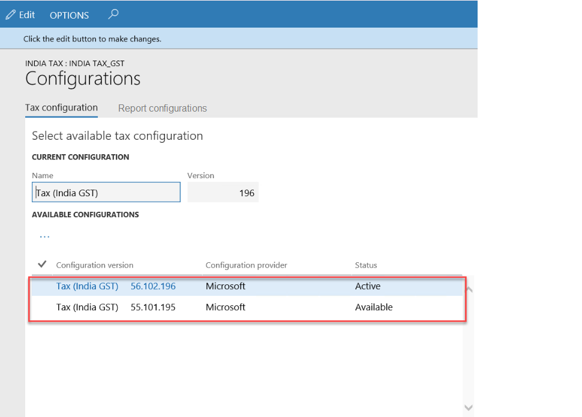
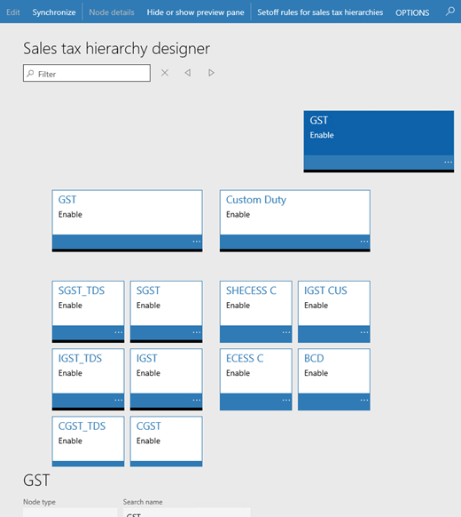
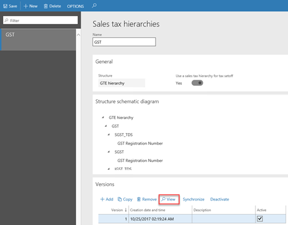

India Goods and Services Tax (GST) overview
This topic provides detailed information about India Goods and Services Tax (GST). For an overview of the tax engine using India GST examples, watch the following videos.
- Tax engine overview (YouTube video)
- GST overview (Tech Talk)
- GTE overview (Tech Talk)
- How to extend GTE (Tech Talk)
- GSTR report overview (Tech Talk)
- How to extend GER (Tech Talk)
For more information, download the following topics:
- Dynamics 365 India GST installation and setup
- Dynamics 365 India GSTR report extension guide
- Dynamics 365 India tax engine integration
- Dynamics 365 India tax engine demo scripts
- Dynamics 365 India tax engine extension guide
Prerequisites
| Prerequisite | Details |
|---|---|
| Set up business verticals. | On the Business verticals page (Tax > Setup > Sales tax > India > Business verticals), create business verticals. For more information, see Create a business vertical. |
| Set up state codes and the union territory designation for Indian states. | On the Address setup page (Organization administration > Global address book > Addresses > Address setup), be sure to enter state codes for each Indian state. Additionally, if the state is a union territory, set the Union territory option to Yes. For more information, see Update the state code and union territory. |
| Set up enterprise tax registration numbers. |
On the Enterprise tax registration numbers page (Tax > Setup > Sales tax > Enterprise tax registration numbers), create enterprise tax registration numbers for companies, vendors, and customers.
|
| Set up GST reference number groups. | GST transactions are differentiated through a unique number sequence. If different number sequence is required for every warehouse or for the addresses of legal entities, you can create a reference number sequence group and assign it to the addresses. For more information, see Set up GST reference number groups. |
| Enter GST information for legal entities, warehouses, vendors, or customers. |
For each legal entity, warehouse, vendor, and customer, you can enter a GSTIN. For each legal entity and warehouse, you can select the GST reference number sequence group.
|
| Create Harmonized System of Nomenclature (HSN) and Services Accounting Code (SAC) codes. | Create HSN and SAC codes for all goods and services. The GST rates that are applied depend on the HSN or SAC codes that are assigned to the goods or services.
You can assign HSN and SAC codes to products in the GST field group of the Released products page. Products of the Item item type should have an HSN code, and products of the Service item type should have an SAC code.
IMPORTANT |
| Assign an SAC code to miscellaneous charges. |
When this charges code is selected for a transaction, the defined tax information is automatically entered, and GST is calculated accordingly.
When this charges code is selected for a transaction, the defined tax information is automatically entered, and GST is calculated accordingly. |
| Create main accounts for the GST posting type. | Go to General ledger > Common > Main accounts, and create a main account for each state-wide ledger account that is required. On the Setup FastTab, be sure to select GST as the posting type. For more information, see Create a main account. |
| Create a GST authority. |
|
| Create a tax period for GST. | Go to Tax > Indirect taxes > Sales tax > Sales tax settlement periods, and create a sales tax period for GST. |
| Create a GST tax registration group. | Go to Tax > Setup > Sales tax > Tax registration group, create a tax registration group, and add GSTIN information. |
Import the configuration and deploy it to a specific company
Before you complete this task, be sure to save all the configuration files in a location that you can access from Dynamics 365 Finance.
Follow these steps to load the configurations and map them to a legal entity.
Tax configurations
Follow the process in the topic, Tax engine import configuration to import the tax configurations and report configurations.
GST configurations
| Version | Details |
|---|---|
|
Microsoft Dynamics 365 for Finance and Operations, Enterprise edition (7.3) GA configuration |
|
KB#4094699 |
|
Support GST on project module Microsoft Dynamics 365 for Finance and Operations (8.0) GA configuration 7.3 with KB#4094699 and KB#4135145 |
|
Support GST on Bank charge 7.3 with KB#4094699, KB#4135145 and KB#4457539 8.0 with KB#4458726 |
|
Add several new fields into taxable documents, Ship from/to xxx, Product Category, Customer group, Vendor group, Prepayment 7.3 + KB#4094699 + KB#4135145 + KB#4457539 8.0 + KB#4458726 8.1.1 |
|
Add invoice date into GST, Rate lookup Enable Non-GST, if Non-GST is marked trans tax information, GST will not be applicable Microsoft Dynamics 365 for Finance and Operations (10.0) |
|
Solve the issue of zero tax base for tax exempt transaction Support CGST&SGST for intra-state stock transfer order between warehouses with different GST registrations Support VAT Support Tax Rate Type Microsoft Dynamics 365 for Finance and Operations (10.0.5) |
|
Remove the tax rate type from Tax Document which should be used by customers who have not updated their terminal to 10.0.5 Microsoft Dynamics 365 for Finance and Operations (10.0.5) |
|
|
|
|
|
|
|
|
Report configurations
| Version | Details |
|---|---|
GST offline tool format:
GSTR1/GSTR2:
|
Microsoft Dynamics 365 for Finance and Operations, Enterprise edition (7.3) GA configuration |
|
Total Item Discount Amount is not coming in GSTR. Item Unit Of Measurement should show both the unit and description. Service item should be Nos. No customer billing name for stock transfer in GSTR. Microsoft Dynamics 365 for Finance and Operations (10.0.1) |
GST offline tool format:
GSTR1/GSTR2:
|
GSTR for New Return, ANX-1 Govt. offline tool, and Purchase register. Dynamics 365 Finance version 10.0.14. |
Map configurations to the Legal entity
Go to Tax > Setup > Tax configuration > Tax setup.
Select New.
In the Tax setup field, enter a value.
In the Description field, enter a value.
Select Configurations.
On the Tax configuration FastTab, under Available configurations, select the ellipsis button (...), and then select New.
In the Configuration version field, select a value. The new tax configuration is listed in the Available configurations grid.
Select the ellipsis button (...), and then select Synchronize.
Select Activate. The activated configuration is updated as the current configuration.

On the Report configuration FastTab, under Select report configurations, select the Select checkbox.
In the Report controller field, select a value.
Repeat step 10 and 11, to map the report configurations.

Close the page.
On the Companies FastTab, create a record.
In the Companies field, select a value, and then select Save.
On the Companies FastTab, select Activate. The tax setup is now active for the selected company.

Update the configuration version
Go to Tax > Setup > Tax configuration > Tax setup.
Select a tax setup.
On the Companies FastTab, select Deactivate.
Repeat steps 2 through 13 in the previous section, Import the configuration and deploy it to a specific company, to load the configuration, deploy it to the company, and synchronize the new version.

Select the new version, and then select Activate.
Complete the tasks in the Tax setup section to update data for the new version.
Important
If the tasks in the Tax setup, section were previously completed for the old configuration version, the data is retained after you synchronize to the new configuration version. You just have to review the setup and update it according to the new changes.
Tax setup
This section walks you through defining the GST and Customs tax setup.
Map configuration tax types to ERP tax types (Customs)
Go to Tax > Setup > Tax configuration > Tax setup.
Select a tax setup, and then select a company.
Select Setup.
Select the Customs node.
On the Tax type mapping tab, in the Tax type field, select Customs.
Define a tax period:
- Select the node for the tax component.
- On the Tax period mapping tab, in the Period field, select a value.
Define main accounts:
On the Accounting tab, on the Conditions FastTab, select Add.
In the Import Order field, select a value.
In the Export order field, select a value.
Save the record.
On the Values FastTab, in the Main account field, select a value.
Note
The list of accounts is generated dynamically, based on the posting profile from the configuration. The posting type of the selected main account should be Customs.
Select the IGST CUS node.
On the Values FastTab, in the Main account field, select a value.
Note
The main account that you selected for Customs duty accrual should be the same account that you selected as the Customs duty accrual account for the GST > IGST node.
Map configuration tax types to ERP tax types (GST)
Go to Tax > Setup > Tax configuration > Tax setup.
Select a company.
Select Setup.
Select the GST node.
On the Tax type mapping tab, in the Tax type field, select GST.
Define a tax period:
- Select the node for the tax component.
- On the Tax period mapping tab, in the Period field, select a value.
Define main accounts:
On the Accounting tab, on the Conditions FastTab, select Add.
In the GST Registration Number field, select a value.
Save the record.
On the Values FastTab, in the Main account field, select a value.
Note
- The list of accounts is generated dynamically, based on the posting profile from the configuration.
- Tax main accounts can be defined at the level of either the tax type or the tax component. The value at the tax component level overrides the value at the tax type level. If the field is left blank for a posting type at the tax component level, the corresponding value from the tax type level is used for posting. We recommend that you set up the tax accounts at the tax component level for each registration.
Set up rate and percentage tables:
- Expand the node for the tax component.
- Select the Rate node, and then, in the Value field, define the tax rates.
- Select the Reverse Charge Percentage node, and then, in the Value field, define the reverse charge percentage.
- Select the Load on Inventory Percentage node, and then, in the Value field, define the load on inventory percentage.
- Select Close.
- Select Parameters.
- In the Tax journal name field, select a value. (This step is required in order to post the tax adjustments.)
- In the Tax journal voucher series field, select a value.
- Select OK.
Set up a sales tax hierarchy, and maintain setoff rule profiles:
Go to Tax > Setup > Sales tax > Sales tax hierarchies.
Select New.
In the Name field, enter a value.
In the Structure field, select GTE hierarchy.
Select OK.
On the Versions FastTab, select Synchronize.
Close the message.
Select View. The Sales tax hierarchy designer page shows the tax type and tax components, based on the configuration.

Select Setoff rules for sales tax hierarchy.
Select New.
In the Name field, enter a value.
Save the record.
On the Recoverable FastTab, select the tax components, and then adjust the Priority values.
On the Payable FastTab, select the tax components, and then adjust the Priority values.
Define the setoff rules according to the legal requirement.

Select Close.
Close the Sales tax hierarchy designer page.
Select Activate.
Select Close.
Maintain setoff hierarchy profiles
- Go to Tax > Setup > Sales tax > Maintain setoff hierarchy profiles.
- Select New.
- In the Effective date field, enter a value.
- In the Hierarchy field, select a value.
- Select OK.
- Select Activate.
- Select Yes in the message.
- Close the message.
- Close the page.
Create GST minor codes
- Go to Tax > Setup > Sales tax > India > GST minor codes.
- Select New.
- In the Tax component field, select a value.
- In the Minor code field, enter a value.
- In the Description field, enter a value.
Print management
Complete the following procedures to select the India GST report formats for customer and vendor invoices.
Accounts payable
- Go to Accounts payable > Setup > Forms > Form setup.
- On the General tab, select Print management.
- Expand the Vendor invoice node, and select Original.
- Select VendInvoiceDocument_IN.Report as the report format.
Accounts receivable
- Go to Accounts receivable > Setup > Forms > Form setup.
- On the General tab, select Print management.
- Expand the Customer invoice node, and select Original.
- Select SalesInvoice_IN.Report as the report format.
- Expand the Free text invoice node, and select Original.
- Select FreeTextInvoice.ReportIN as the report format.
Trouble shooting guide
The tax engine is a highly configurable engine handling tax applicability, calculation, posting, and settlement. Please refer to trouble shooting guide first whenever you encounter any issues.
Resources for other Microsoft Dynamics products
If you're using one of the following versions of Microsoft Dynamics AX, you can use the India GST release to help you be compliant with India GST regulations:
- Microsoft Dynamics AX 2009 SP1
- Microsoft Dynamics AX 2012 R2
- Microsoft Dynamics AX 2012 R3
The India GST release takes advantage of Microsoft Dynamics 365 for Operations (1611) together with an applied hotfix to generate GST configurations that you can use in your release of Microsoft Dynamics AX.
For more detailed information, see the following documentation and downloads for release packages.
Releases
Release notes
Install and setup
- Dynamics AX 2009 SP1 India GST update 1 installation guide
- Dynamics AX 2012 R2 India GST update 1 installation guide
- Dynamics AX 2012 R3 India GST update 1 installation guide
- Dynamics AX 2009 SP1 India GST update 2 installation guide
- Dynamics AX 2012 R2 India GST update 2 installation guide
- Dynamics AX 2012 R3 India GST update 2 installation guide
Tax engine
E-way bill